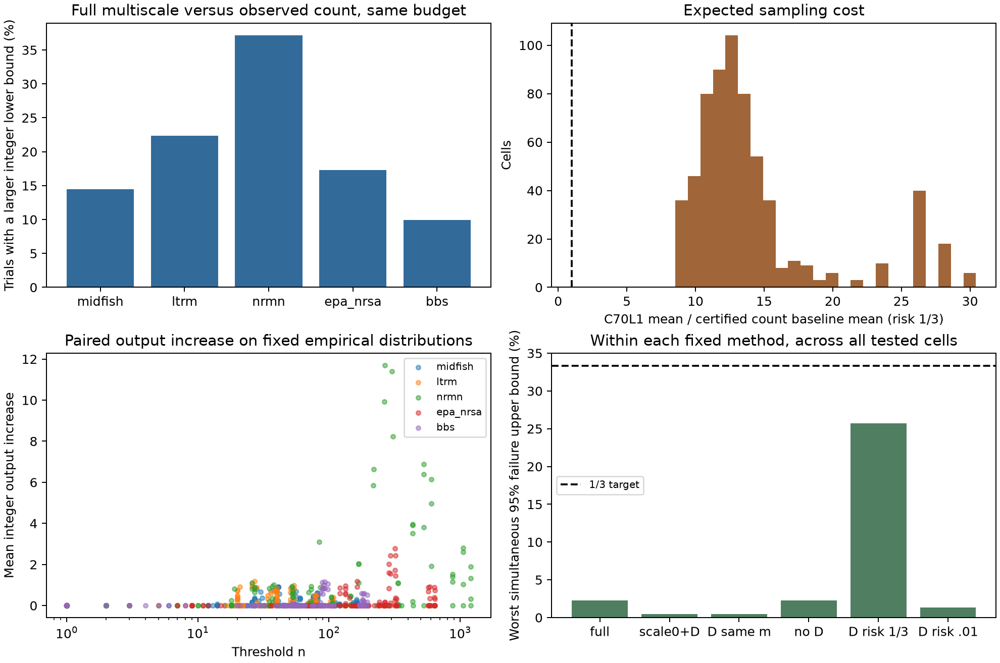

本次完整算法在 1,280,000 条独立泊松重采样路径中出现 78 次联合失败。 最差单格失败率 1.10%，单格单侧95%上界最大为 1.57%； 对全部 640 格做 Bonferroni 校正后，完整算法最坏95%同时上界为 2.27%。 相同样本预算下，有 259,115 条路径（20.24%）的整数下界高于纯计数，平均增加 0.362 个类别；此描述性增量包含错误抬高输出的路径。 完整多尺度输出高于“第0尺度+D”的路径有 259,076 条。 算法泊松样本均值是独立认证计数基线的 8.53–30.43 倍。 独立审计确认，其中 259,098 次是合法且更紧的下界，17 次是错误抬高；这些提高没有修复纯计数的失败，纯计数在相同大预算下原本全部成功。
| 数据来源 | 群体 | 每群体计数N | 类别S | 参数格 | 重采样路径 |
|---|---|---|---|---|---|
| MidFish 湖泊鱼类 | 8 | 33,634–589,928 | 26–82 | 128 | 256,000 |
| LTRM 河流鱼类 | 8 | 4,681–301,725 | 34–54 | 128 | 256,000 |
| NRMN 礁区鱼类 | 8 | 24,967–1,762,118 | 35–603 | 128 | 256,000 |
| EPA 河流鱼类 | 8 | 49,653–110,734 | 121–321 | 128 | 256,000 |
| BBS 鸟类 | 8 | 602–10,966 | 52–98 | 128 | 256,000 |
原始归档、清理结果及每一群体的来源路径/校验值保存在 populations.json 与 prepared/。
| 数据来源 | 联合失败次数 | 最坏单格失败率 | 输出高于D的路径 | 平均增加类别数 | 预算倍数中位数 |
|---|---|---|---|---|---|
| MidFish 湖泊鱼类 | 13 | 0.35% | 14.50% | 0.146 | 13.49× |
| LTRM 河流鱼类 | 37 | 1.10% | 22.34% | 0.230 | 14.10× |
| NRMN 礁区鱼类 | 0 | 0.00% | 37.13% | 1.088 | 12.33× |
| EPA 河流鱼类 | 0 | 0.00% | 17.31% | 0.240 | 11.05× |
| BBS 鸟类 | 28 | 0.70% | 9.94% | 0.105 | 12.70× |
| 方法 | 二元错误 | 超过真实S | 低于有效支持 | 联合失败 | 最坏95%同时上界 |
|---|---|---|---|---|---|
| 完整多尺度 C70L1 | 61 | 17 | 0 | 78 | 2.27% |
| 第0尺度 + D | 0 | 0 | 0 | 0 | 0.47% |
| 相同预算 D（等同 C70L14） | 0 | 0 | 0 | 0 | 0.47% |
| 去掉 D 的消融 | 61 | 17 | 0 | 78 | 2.27% |
| 独立较小预算 D（风险≤1/3） | 5517 | 0 | 388 | 5517 | 25.71% |
| 独立较小预算 D（风险≤1%，补充） | 35 | 0 | 1 | 35 | 1.32% |
78次失败分为61次零假设下的错误拒绝与17次估计下界超过真实支持；没有低于有效支持的失败。全部78条路径经1024位起始Arb精度重算确认。最坏场景是LTRM群体ltrm_9300397bb9，S=n=36、ε=0.1，22/2000次错误拒绝。相同预算的纯计数及第0尺度+D均零失败；完整算法的额外尺度提高了下界，同时引入少量上偏差。
为检查精度与预算的权衡，观察主结果后又预设了一组1%理论风险计数对照，保持640格和每格2000次，另用独立随机种子。 该基线共 35 次联合失败，最坏场景失败率 0.45%，95%同时上界 1.32%；C70L1预算仍是它的 8.09–10.59 倍。 这说明即使要求计数基线提供≤1%的理论风险，本批小支持分布中C70L1仍没有样本预算优势。该补充使用独立抽样，未宣称逐路径显著性；较低预算下的下界紧度可能不同。
以上错误次数按同一参数格的重复路径统计；各方法重复使用相同路径不增加独立证据量。去D消融用于检查观测类别保护项。二元与估计事件可能重叠，因此联合失败不等于各列之和。

整数输出平均增量最大的5格（预设实验完成后作描述性排序）：
| 格 | 来源 | S | n | ε | 平均增加类别 | 输出抬高比例 |
|---|---|---|---|---|---|---|
| c0345 | NRMN 礁区鱼类 | 528 | 268 | 0.5 | 11.700 | 100.0% |
| c0317 | NRMN 礁区鱼类 | 603 | 302 | 0.9 | 11.409 | 100.0% |
| c0349 | NRMN 礁区鱼类 | 528 | 264 | 0.9 | 9.918 | 100.0% |
| c0313 | NRMN 礁区鱼类 | 603 | 307 | 0.5 | 8.226 | 96.9% |
| c0346 | NRMN 礁区鱼类 | 528 | 528 | 0.5 | 6.875 | 100.0% |
独立512位 Arb 区间运算确认：69.0062713812 < C* < 69.0062713813；C=70 时 H=0.4929199202809152 < 1/2。 原附录 A 的期望/系数引理可移除 b≤1 限制，因其证明仅使用 0<a<b 及其余尺度条件。 另外用992个连续闭区间，独立严格认证了C≥69、1≤L≤32的下偏差上界小于1.656775×10⁻²⁷。本次失败全部来自上偏差，与下偏差控制相符。 已有 C70L14 证书可覆盖当前相同统计量的 L≥14（n≥442414）部分，已有联合失败界约0.000879401164。 你粘贴的新有限证书仅覆盖 C∈[69.00627,69.00628]，不包含70；增加C同时改变次数取整和权重，不能直接用“采样更多”推出成功率单调。 本机未找到新PDF/TEX/ZIP，故小n上偏差证书、式(8)完整证明、临界点可取及必要性CLT的完整证明尚未完成逐行复核。式(8)的480次数值诊断未发现反例，但不能替代证明。 当前未补齐的 C70L1 全分布概率保证集中在1≤n≤442413的上尾控制。数值实验和系数一致性检查均不能代替这部分证明。
从5个来源各预选8个群体，共40个固定经验分布；每来源按有效总计数取最大的6组及排序中部2组，要求S≥20。 清理规则在观察算法结果之前固定：剔除未定种、杂交/非目标类群及无效计数，保留来源和筛选审计。 ε取0.01、0.1、0.5、0.9；n依次取max(1,effε−1)、floor((effε+S)/2)、S、2S，并去除重复阈值；effε=1时第一个阈值不属于有效支持以下。 每格2000次，分4个预先固定种子块。按各物种经验概率独立生成Poi(m p_i)，总量M自然服从Poi(m)。 采样使用NumPy的binary64泊松随机数近似；Arb认证针对参数和统计量计算，不将随机数生成器称为严格区间采样器。 算法使用C0=70、L0=1、m=70n/[ε(1+ln n)]，完整保留多尺度、ceil(k)、校正和ceil输出/截断。 尾质量、有效支持和Yes/No/Gap标签用有理数精确计算。Gap不计二元检验错误，但仍检查估计区间。 联合失败事件是二元判断错误或S_hat不在[min(effε,n),min(S,n)]；报告该更严格事件。 浮点区间包围评分，跨整数/阈值时用高精度Arb复核。独立审计覆盖500组参数、665个尺度、13583个权重、3325个多项式点及133个指纹。 完整算法、单尺度、纯计数、去D消融共享同一指纹；较小预算计数另行抽样，预算经Arb认证Poi(mε)左尾≤1/3。 所有本次n满足L<14，所以相同预算下旧C70L14恰好等于纯计数。每种方法的置信上界分别覆盖全部格，未把五种方法合并为一个同时置信家族。
主实验逐格累计耗时 30.17 秒，其中泊松采样 6.78 秒、区间评分 1.43 秒；不含原始数据清洗，也不是野外采样时间。采用本机批量指纹计算，不能据此推断逐样本在线延迟。
这些实验衡量固定真实数据经验分布上的算法表现。真实生态数据存在调查努力差异、群体相关和探测偏差；现场总体中的未观测物种没有已知真值。 因此，实验真值是清理后经验分布的类别数及尾质量。重采样次数不等于新增野外样本数，跨年度/地点观测也不等于唯一动物个体。 本轮类别数S为26–603、阈值n为1–1206；约979万源计数没有转化为大n渐近区间。全部真实数据场景均位于L<14，恰好属于本轮新增、尚缺统一上尾证书的区间。 本次有 131 格的期望抽样量超过源群体已有总计数；有放回模拟仍有效，但不能解释为已有独立野外样本足够。 最大组加中等组的选样适合覆盖规模差异，不构成对全球生态系统的随机代表性样本。二名法清理仅为可复现过滤，不能替代完整分类学复核。BBS未额外过滤天气质量；LTRM白名单会排除新增但未列入旧文档的有效物种代码，详见清理审计。 eBird教程只有一个目标鸟种，出现记录库和测序reads的计量单位不同，未纳入本次物种个体计数主比较。 固定C70L1在本次小支持规模上具有经验准确性，但没有显示相对独立认证计数法的样本预算优势。样本量、统计精度和CPU开销应分开陈述。 这些结果可支撑应用验证及参数可运行性；CCF-A级发表还取决于理论新意、完整证明和明确优于强基线的适用区间。
另有 114 格小 n 合成诊断、228,000 次模拟，完整算法零失败，95%同时上界为 0.386%。纯计数亦零失败、下界收益为零；该诊断未计入真实数据统计。
下一步优先取得新的完整证明和数值证书，把有限范围认证改为覆盖C=70（或覆盖[69.00627,70]并显式处理次数跳变）。 在理论闭环后，补充更大类别数、重尾/稀有类比例变化、独立调查或时间留出验证，并在相同目标风险下比较样本预算与计算时间。 若主要目标是现实数据上的低成本应用，保留本轮C70L1作为基准，再单独研究自适应/更低预算方案；新方案需单独界定保证。
cd /home/snowy/OSST OPENBLAS_NUM_THREADS=1 .venv/bin/python -m real_l01.run .venv/bin/python real_l01/independent_checks.py --module real_l01.algorithm .venv/bin/python real_l01/theory_review.py --diagnostic-cases 120 OPENBLAS_NUM_THREADS=1 .venv/bin/python -m real_l01.small_n OPENBLAS_NUM_THREADS=1 .venv/bin/python -m real_l01.budget_check .venv/bin/python -m real_l01.audit_results .venv/bin/python -m real_l01.report